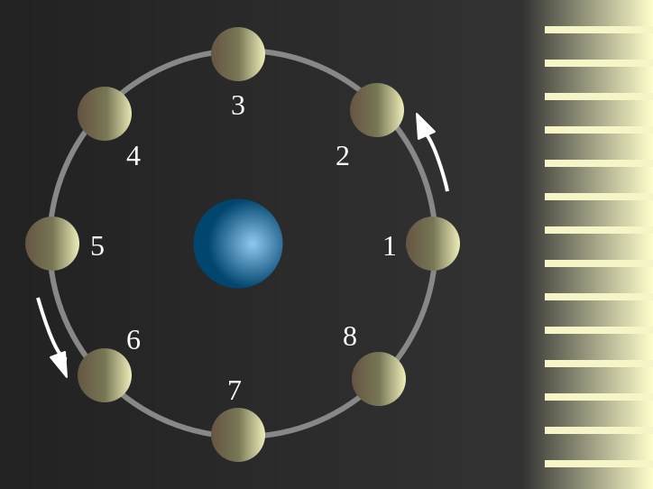

Ваш подручный детектив

Перетащите ваш файл сюда!
Немного информации про фазы Луны
Фазы Луны – периодически меняющиеся степени освещенности Луны Солнцем. Выделяют следующие фазы: новолуние, растущая Луна (первая фаза, первая четверть, вторая фаза), полнолуние и убывающая Луна (третья фаза, третья четверть, четвертая фаза).
Луна влияет на жизненную активность человека, его самочувствие. Лунный гороскоп подскажет, когда лучше начинать новые дела, менять место работы, решать денежные вопросы, знакомиться с новыми людьми, работать по дому, стричься, обращать особое внимание на здоровье.
Какие бывают фазы Луны

- Новолуние - состояние, когда Луна не видна
- Молодая луна — первое появление Луны на небе после новолуния в виде узкого серпа.
- Первая четверть — состояние, когда освещена половина Луны.
- Прибывающая луна.
- Полнолуние — состояние, когда освещена вся Луна целиком.
- Убывающая луна.
- Последняя четверть — состояние, когда снова освещена половина Луны.
- Старая луна.